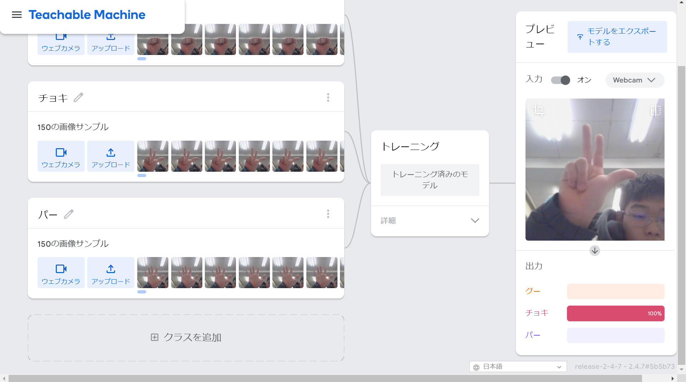
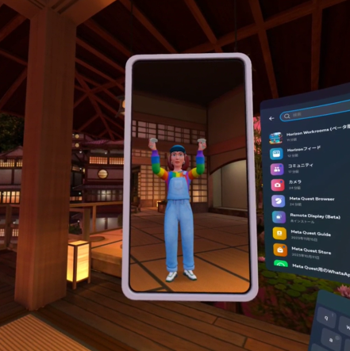

第2週目
2-1 １週目のレポートをHTMLで作る
１週目のレポート
1.内容
githubを用いてホームぺージを作成した。
2.感想
ホームページ作成までの手順を知る事が出来て興味深かった。
2-2 機械学習体験

1.内容
teachblemachineを用いてAIにじゃんけんの手のパターンを記憶させて
、判別させた。
2.感想
AIが覚える画像を増やせば増やすほど精度が上がっていくのが面白かったです。
このAIは初心者でも簡単に使えて応用が利くと思いました。
2-3 VR（バーチャルリアリティー：Virtual Reality）会議室の体験

1.内容
Meta Quest2を用いて、バーチャル空間内の会議室に入った。
2.感想
自分は３Dバーチャル空間に這入るのが初めてだったので、３Dでリアルな映像にびっくりしました。
今の時点でこれだけすごいのでこれからの進化が楽しみです。